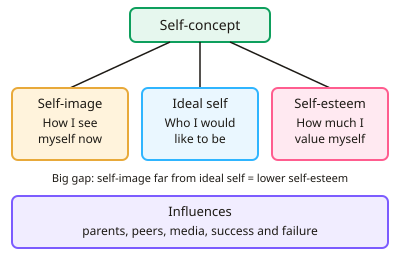

GCSE Psychology · Topic 8
The self
The self explores how we see ourselves, and how our sense of self develops and affects our lives.
We will study self concept and self esteem, theories of the self, and how children develop self recognition.
Then we look at gender identity development, and how self esteem links to achievement and mental wellbeing.
- 6 subtopics
- 232 questions
- Free: 8.1 notes and 10 questions
In this topic
- 8.1Self-concept and self-esteem: definitions, measurement and influencesFree below · 48 questions
- 8.2Theories of the self: Rogers, Cooley's looking-glass self and self-efficacyOpen in Full Marks · 44 questions
- 8.3Development of the self-concept in children: Lewis and Brooks-Gunn's mirror (rouge) testOpen in Full Marks · 28 questions
- 8.4Gender identity and sex-role development: biological, social learning and Kohlberg's explanationsOpen in Full Marks · 44 questions
- 8.5Applying the self: self-esteem, achievement and mental wellbeingOpen in Full Marks · 43 questions
- 8.6Motivation and needs: Maslow's hierarchy, intrinsic and extrinsic motivation, and drive theoryOpen in Full Marks · 25 questions
8.1 · Free notes
Self-concept and self-esteem: definitions, measurement and influences

Key points
- Self-concept is the set of beliefs and ideas a person has about who they are. It includes their self-image and their ideal self.
- Self-image is how you see yourself now: your appearance, abilities, personality and roles (e.g. 'shy', 'good at art', 'a sister').
- Ideal self is the person you would like to be. It is shaped by your values, goals and the people you admire.
- Self-esteem is how much you value or feel positive about yourself. It is an evaluation, so it can be high or low. Self-concept describes who you are, while self-esteem judges how good that is.
- Rogers suggested that a big gap between self-image and ideal self leads to low self-esteem. A small gap (congruence) leads to higher self-esteem.
- The Q-sort uses cards of statements (e.g. 'I am friendly'). The person sorts them into piles from 'most like me' to 'least like me'. They sort once for 'me now' and once for 'my ideal self', and the two sorts are compared (e.g. by correlation).
- The Rosenberg self-esteem scale has 10 statements rated on a 4-point agree–disagree scale. Negatively worded items are reverse scored, so a higher total always means higher self-esteem.
- Strengths of these measures are that they are quick and give quantitative data that can be compared. Weaknesses are that they are self-report, so people may lie or show social desirability bias. Scores can also change with mood, and Q-sort statements are chosen by the researcher.
- Interviews or observation can also be used. They give qualitative detail but are time-consuming and open to interpretation.
- Influences on self-concept and self-esteem include parents (warmth and praise), peers and social comparison, the media and social media (idealised images), school success or failure, and life events.
- Exam tip: when asked to distinguish self-concept from self-esteem, use the words 'description' and 'evaluation'. Always link your answer to the context in the question.
In more detail
- Measuring self-esteem: the Rosenberg Self-Esteem Scale (1965) has 10 statements rated from strongly agree to strongly disagree.
- Twenty Statements Test: Kuhn and McPartland (1954) asked people to complete "I am…" twenty times to reveal their self-concept.
- Influences: parents, friends, teachers, culture, the media and experiences of success or failure.
- Social comparison: we judge ourselves by comparing with others, which social media can make harder.
- Evaluation: self-report measures are quick, but answers may be biased by wanting to look good.
Practice
Self-concept and self-esteem: definitions, measurement and influences: 10 questions
Pick an answer to check it, or open the answer for the explanation.
1. Which statement best defines self-esteem?
- The person someone would like to become
- How much a person values and feels positive about themselves
- How accurately others rate a person's abilities
- The beliefs a person holds about their personality and roles
Show answer
B: How much a person values and feels positive about themselves. Self-esteem is an evaluation of one's own worth. Beliefs about personality are self-image, and the person you want to be is the ideal self.
2. Mia describes herself as 'shy, good at art and a sister'. Which part of her self-concept is this?
- Self-esteem
- Congruence
- Ideal self
- Self-image
Show answer
D: Self-image. Self-image is how a person currently sees themselves. It is descriptive, so it is not self-esteem, which is evaluative.
3. In a Q-sort used to study the self, a participant sorts the same cards twice. What are the two sorts?
- Me now, and the person I would like to be
- My mother's view, and my father's view
- Easy statements, and hard statements
- Before therapy only, and after therapy only
Show answer
A: Me now, and the person I would like to be. Self-image and ideal self are sorted separately. Comparing the two sorts shows how big the gap is, which relates to self-esteem.
4. Which is a feature of the Rosenberg self-esteem scale?
- Open interview questions only
- An observer scoring a child's play
- Statements rated on an agree–disagree scale
- It measures only the ideal self
Show answer
C: Statements rated on an agree–disagree scale. The Rosenberg scale is a questionnaire of 10 statements rated on a 4-point agree–disagree scale, so it gives numerical self-report data.
5. A Rosenberg-style scale is scored 0–30, with a higher score meaning higher self-esteem. Ali scores 24 and Ben scores 11. What is the difference and who has lower self-esteem?
- 35 points; Ben is lower
- 11 points; Ben is lower
- 13 points; Ben is lower
- 13 points; Ali is lower
Show answer
C: 13 points; Ben is lower. 24 − 11 = 13. Ben's score is lower, so his self-esteem is lower on this measure.
6. Students answer a self-esteem questionnaire in a way that makes them look confident in front of their teacher. Which problem is this?
- Order effects
- Sampling bias
- Experimenter bias
- Social desirability bias
Show answer
D: Social desirability bias. Social desirability bias is when participants give answers that make them look good, which reduces the validity of self-report measures.
7. A teenager keeps seeing edited images of celebrities online and feels worse about their appearance. Which influence on self-esteem does this show?
- Conditional positive regard from a parent
- Mastery experience
- Congruence
- Media and social comparison
Show answer
D: Media and social comparison. The media show idealised images. Comparing yourself with them can widen the gap between self-image and ideal self and lower self-esteem.
8. According to Rogers, what is a person with a large gap between self-image and ideal self most likely to have?
- Low self-esteem
- High self-esteem
- Unconditional positive regard
- Congruence
Show answer
A: Low self-esteem. A large gap is called incongruence, and Rogers linked it to lower self-esteem. A small gap means congruence and higher self-esteem.
9. Which statement correctly distinguishes self-concept from self-esteem?
- Self-concept is an evaluation and self-esteem is a description
- They mean exactly the same thing
- Self-esteem is only measured in children
- Self-concept is a description of who you are and self-esteem is how you evaluate yourself
Show answer
D: Self-concept is a description of who you are and self-esteem is how you evaluate yourself. Self-concept describes who we think we are. Self-esteem is the judgement of how good or worthwhile that self is.
10. Year 10 pupils' Q-sort correlation between 'me now' and 'ideal self' is r = +0.30 before a programme and r = +0.70 after it. What does this suggest?
- The two sorts are now unrelated
- Self-image moved closer to ideal self
- Self-esteem definitely fell
- Ideal self became less important
Show answer
B: Self-image moved closer to ideal self. A higher positive correlation means the two sorts are more alike. The gap has narrowed, which is linked to higher self-esteem.
Keep going in Full Marks
Full Marks has 48 questions on Self-concept and self-esteem: definitions, measurement and influences (38 more than here), set out in practice levels. You also get notes and 3D models for all 6 subtopics of The self, plus games, timed exams and past papers.
On your exam board
- EdexcelTopic 7: The self
- CambridgeTopic 5: Motivation and needs
Not in the AQA and OCR specifications.